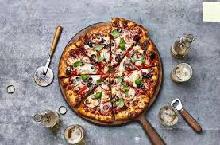

Pizza

Description
Pizza is a beloved classic that needs no introduction. This homemade pizza recipe allows you to create your own custom pie with your favorite toppings. Whether you're a fan of the classic Margherita, loaded with veggies, or prefer a meat lover's feast, making pizza at home is a fun and delicious experience.
Ingredients
- Pizza dough (store-bought or homemade)
- Pizza sauce
- Mozzarella cheese
- Parmesan cheese
- Your choice of pizza toppings (e.g., pepperoni, mushrooms, bell peppers, onions, olives, etc.)
- Olive oil
- Italian seasoning (optional)
- Red pepper flakes (optional, for a spicy kick)
Steps
- Preheat Your Oven: Preheat your oven to 475°F (245°C) or as recommended on your pizza dough packaging. If you have a pizza stone, place it in the oven while preheating.
- Prepare the Pizza Dough: Roll out the pizza dough on a lightly floured surface into your desired pizza shape and thickness. If you're using a pizza stone, transfer the rolled-out dough onto a pizza peel or an inverted baking sheet dusted with cornmeal.
- Add Pizza Sauce: Spread a thin layer of pizza sauce evenly over the dough, leaving a small border around the edges for the crust.
- Add Cheese: Sprinkle a generous amount of shredded mozzarella cheese over the sauce. For extra flavor, you can also add some grated Parmesan cheese.
- Add Toppings: Add your favorite pizza toppings. Get creative! Whether you like classic pepperoni, fresh veggies, or a combination of both, this is where you can make your pizza unique.
- Bake the Pizza: If you're using a pizza stone, carefully slide the pizza from the pizza peel onto the hot stone in the oven. Otherwise, place the baking sheet with the pizza into the oven.
- Bake Until Golden and Bubbly: Bake for about 10-15 minutes or until the crust is golden brown, and the cheese is bubbly and lightly browned.
- Remove from Oven: Using oven mitts or a pizza peel, carefully remove the pizza from the oven.
- Add Finishing Touches: Optionally, drizzle some olive oil over the hot pizza and sprinkle Italian seasoning or red pepper flakes for extra flavor.
- Slice and Serve: Allow the pizza to cool for a minute or two, then slice it into pieces and enjoy your homemade pizza!